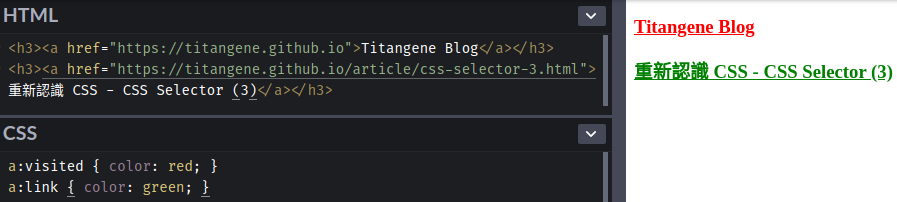
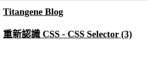
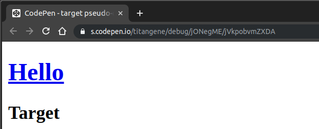
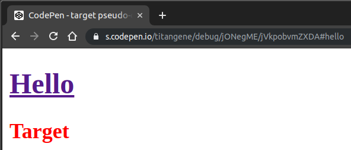
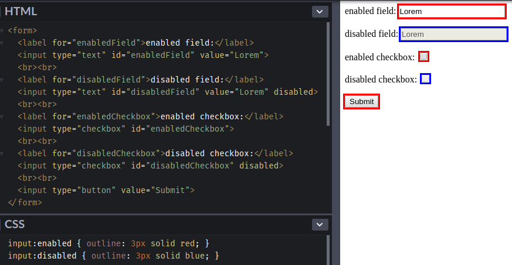
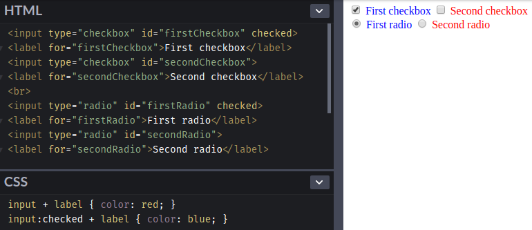

<!DOCTYPE html><html><head><meta name="generator" content="Hexo 3.9.0"><meta charset="utf-8"><title>重新認識 CSS - Pseudo-class (偽類) (1) | Titangene Blog</title><meta name="description" content="利用 blog 紀錄學習歷程"><meta http-equiv="X-UA-Compatible" content="IE=edge"><meta name="viewport" content="width=device-width,initial-scale=1,maximum-scale=1"><meta name="HandheldFriendly" content="True"><meta name="apple-mobile-web-app-capable" content="yes"><meta name="author" content="Titangene"><link rel="shortcut icon" href="/favicon.ico"><link rel="alternate" href="/atom.xml" title="Titangene Blog"><meta name="description" content="Selector (選擇器) 可用來選擇 HTML 和 XML 文件中的節點，並將樣式屬性綁定到文件 (HTML 和 XML) 中的元素上。當選擇器與某元素 match 的時候，就可以對選到的元素進行 CSS 樣式設定。本篇會介紹 pseudo-class (偽類)。"><meta name="keywords" content="IT 鐵人賽"><meta property="og:type" content="article"><meta property="og:title" content="重新認識 CSS - Pseudo-class (偽類) (1)"><meta property="og:url" content="https://titangene.github.io/article/css-selector-pseudo-class-1.html"><meta property="og:site_name" content="Titangene Blog"><meta property="og:description" content="Selector (選擇器) 可用來選擇 HTML 和 XML 文件中的節點，並將樣式屬性綁定到文件 (HTML 和 XML) 中的元素上。當選擇器與某元素 match 的時候，就可以對選到的元素進行 CSS 樣式設定。本篇會介紹 pseudo-class (偽類)。"><meta property="og:locale" content="zh-tw"><meta property="og:image" content="https://titangene.github.io/images/cover/css.png"><meta property="og:updated_time" content="2019-10-14T00:33:48.784Z"><meta name="twitter:card" content="summary_large_image"><meta name="twitter:title" content="重新認識 CSS - Pseudo-class (偽類) (1)"><meta name="twitter:description" content="Selector (選擇器) 可用來選擇 HTML 和 XML 文件中的節點，並將樣式屬性綁定到文件 (HTML 和 XML) 中的元素上。當選擇器與某元素 match 的時候，就可以對選到的元素進行 CSS 樣式設定。本篇會介紹 pseudo-class (偽類)。"><meta name="twitter:image" content="https://titangene.github.io/images/cover/css.png"><meta name="twitter:creator" content="@titangeneTW"><meta name="twitter:site" content="@titangene_blog"><meta property="fb:admins" content="100001106016019"><meta property="fb:app_id" content="2470546159839111"><meta property="og:image:width" content="1200"><meta property="og:image:height" content="630"><meta name="google-site-verification" content="AaJ39L7h-nWwJjXJMhAMtXSF6H6BUgGWXC80kYvLic8"><link rel="stylesheet" href="//fonts.googleapis.com/css?family=Inconsolata|Titillium+Web"><link href="https://fonts.googleapis.com/css?family=Source+Code+Pro&display=swap" rel="stylesheet"><link rel="stylesheet" href="//use.fontawesome.com/releases/v5.7.0/css/all.css" integrity="sha384-lZN37f5QGtY3VHgisS14W3ExzMWZxybE1SJSEsQp9S+oqd12jhcu+A56Ebc1zFSJ" crossorigin="anonymous"><link rel="stylesheet" href="/style.css"><script async src="https://www.googletagmanager.com/gtag/js?id=UA-129758206-1"></script><script>!function(a){function n(){dataLayer.push(arguments)}a.dataLayer=a.dataLayer||[],n("js",new Date),n("config","UA-129758206-1")}(window)</script><script>function setLoadingBarProgress(e){document.getElementById("loading-bar").style.width=e+"%"}</script></head></html><body><div id="loading-bar-wrapper"><div id="loading-bar"></div></div><script>setLoadingBarProgress(20)</script><header class="l_header"><div class="wrapper"><div class="nav-main container container--flex"><a class="logo flat-box" href="/">Titangene Blog</a><div class="menu"><ul class="h-list"><li><a class="flat-box nav-home" href="/">Home</a></li><li><a class="flat-box nav-archives" href="/archives">Archives</a></li></ul><div class="underline"></div></div><div class="m_search"><form name="searchform" class="form u-search-form"><input type="text" class="input u-search-input" placeholder="Search"> <i class="fas fa-search"></i></form></div><ul class="switcher h-list"><li class="s-search"><a class="fas fa-search" href="javascript:void(0)"></a></li><li class="s-menu"><a class="fas fa-bars" href="javascript:void(0)"></a></li></ul></div><div class="nav-sub container container--flex"><a class="logo flat-box" href="/">Titangene Blog</a><ul class="switcher h-list"><li class="s-comment"><a class="far fa-comment-alt" href="javascript:void(0)"></a></li><li class="s-top"><a class="fas fa-arrow-up" href="javascript:void(0)"></a></li><li class="s-toc"><a class="fas fa-list-ol" href="javascript:void(0)"></a></li></ul></div></div></header><aside class="menu-phone"><nav><a href="/" class="nav-home nav">Home </a><a href="/archives" class="nav-archives nav">Archives</a></nav></aside><script>setLoadingBarProgress(40)</script><div class="l_body"><div class="container clearfix"><div class="l_main"><article id="post-css-selector-pseudo-class-1" class="post white-box article-type-post" itemscope itemprop="blogPost"><section class="meta"><h2 class="title"><a href="/article/css-selector-pseudo-class-1.html">重新認識 CSS - Pseudo-class (偽類) (1)</a></h2><span class="post-time"><span class="post-meta-item-icon"><i class="fa fa-calendar"></i> </span><span class="post-meta-item-text">發表於</span> <time title="建立時間：2019-09-19 16:20:52" itemprop="dateCreated datePublished" datetime="2019-09-19T16:20:52+08:00">2019-09-19 </time><span class="post-meta-divider">|</span> <span class="post-meta-item-icon"><i class="fa fa-calendar-check"></i> </span><span class="post-meta-item-text">更新於</span> <time title="修改時間：2019-10-14 08:33:48" itemprop="dateModified" datetime="2019-10-14T08:33:48+08:00">2019-10-14</time></span> <span class="comments-count"><span class="post-meta-divider">|</span> <span class="post-meta-item-icon"><i class="fas fa-comment"></i> </span><a href="https://titangene.github.io/article/css-selector-pseudo-class-1.html#disqus_thread" class="article-comment-count" data-disqus-identifier="article/css-selector-pseudo-class-1.html" itemprop="discussionUrl"></a></span><div class="post-category"><span class="post-meta-item-icon"><i class="fa fa-folder"></i> </span><span class="post-meta-item-text">分類於</span> <span itemprop="about" itemscope itemtype="http://schema.org/Thing"><a href="/categories/css/" itemprop="url" rel="index"><span itemprop="name">CSS</span></a></span></div></section><section class="toc-wrapper"><ol class="toc"><li class="toc-item toc-level-2"><a class="toc-link" href="#前言"><span class="toc-text">前言</span></a></li><li class="toc-item toc-level-2"><a class="toc-link" href="#Pseudo-classes"><span class="toc-text">Pseudo-classes</span></a><ol class="toc-child"><li class="toc-item toc-level-3"><a class="toc-link" href="#Dynamic-pseudo-classes"><span class="toc-text">Dynamic pseudo-classes</span></a><ol class="toc-child"><li class="toc-item toc-level-4"><a class="toc-link" href="#The-link-pseudo-classes：-link-和-visited"><span class="toc-text">The link pseudo-classes：:link 和 :visited</span></a></li><li class="toc-item toc-level-4"><a class="toc-link" href="#The-user-action-pseudo-classes：-hover、-active-和-focus"><span class="toc-text">The user action pseudo-classes：:hover、:active 和 :focus</span></a></li></ol></li><li class="toc-item toc-level-3"><a class="toc-link" href="#The-target-pseudo-classes：-target"><span class="toc-text">The target pseudo-classes：:target</span></a></li><li class="toc-item toc-level-3"><a class="toc-link" href="#UI-element-states-pseudo-classes"><span class="toc-text">UI element states pseudo-classes</span></a><ol class="toc-child"><li class="toc-item toc-level-4"><a class="toc-link" href="#enabled-disabled-pseudo-class"><span class="toc-text">:enabled &amp; :disabled pseudo-class</span></a></li><li class="toc-item toc-level-4"><a class="toc-link" href="#checked-pseudo-class"><span class="toc-text">:checked pseudo-class</span></a></li></ol></li></ol></li><li class="toc-item toc-level-2"><a class="toc-link" href="#最後"><span class="toc-text">最後</span></a></li></ol></section><section class="article typo"><div class="article-entry" itemprop="articleBody"><p></p><p>Selector (選擇器) 可用來選擇 HTML 和 XML 文件中的節點，並將樣式屬性綁定到文件 (HTML 和 XML) 中的元素上。當選擇器與某元素 match 的時候，就可以對選到的元素進行 CSS 樣式設定。本篇會介紹 pseudo-class (偽類)。</p><a id="more"></a><h2 id="前言"><a class="header-anchor" href="#前言"></a>前言</h2><blockquote><p>「重新認識 CSS」這個系列名稱的由來就如其名，我想要重新認識它。雖然以前就有學過 CSS，但這次想從 CSS Spec 中學到最原始的定義和內容，更加了解 CSS 的原理，讓我在切版的時候可以更加確定自己在做什麼，我踩到的雷只是因為我不夠了解它才會炸開。</p><p>在這 30 天的內容中，會將 Spec 內看到的資料整理成這個系列，也希望正在學 CSS 的各位可以更加了解它。另外我也會同時將文章發至我的 Blog，如果想直接看文內的程式碼 Demo 畫面，可以到我的 Blog 來看 😃。</p><p>本文同步發表於 iT 邦幫忙：<a href="https://ithelp.ithome.com.tw/articles/10217730" target="_blank" rel="noopener">重新認識 CSS - Pseudo-class (偽類) (1)</a></p><p>「重新認識 CSS」系列文章發文於：</p><ul><li><a href="https://ithelp.ithome.com.tw/users/20117586/ironman/2617" target="_blank" rel="noopener">iT 邦幫忙</a></li><li><a href="https://titangene.github.io/tags/it-%E9%90%B5%E4%BA%BA%E8%B3%BD/">Titangene Blog</a></li></ul></blockquote><p>之前有提到以下這些都是 simple selector：</p><ul><li>type selector</li><li>universal selector</li><li>attribute selector</li><li>class selector</li><li>ID selector</li><li>pseudo-class</li></ul><blockquote><p>本篇會介紹 pseudo-class，如果想了解其他 simple selector 可參閱之前介紹的「<a href="https://ithelp.ithome.com.tw/articles/10216566" target="_blank" rel="noopener">重新認識 CSS - Simple Selector &amp; Groups of selector</a>」。</p></blockquote><h2 id="Pseudo-classes"><a class="header-anchor" href="#Pseudo-classes"></a>Pseudo-classes</h2><p>pseudo-class 是以 <code>:</code> 為開頭，後面接著 pseudo-class 的名稱，有些會在後面加上括號 <code>()</code>，並在括號之間加上值。例如：<code>:nth-child(2)</code>。</p><div class="warning"><p>注意：</p><ul><li>pseudo-class 和 pseudo-element 不相同</li><li>pseudo-class 是以 <code>:</code> 為開頭</li><li>pseudo-element 是以 <code>::</code> 為開頭，但也可以以 <code>:</code> 為開頭，因為在舊版的 W3C Spec 中沒有將 pseudo-class 和 pseudo-element 區分成 <code>:</code> 和 <code>::</code>。如果你寫 pseudo-element 是用 <code>:</code>，大部份瀏覽器也還是會支援這種語法。</li></ul></div><h3 id="Dynamic-pseudo-classes"><a class="header-anchor" href="#Dynamic-pseudo-classes"></a>Dynamic pseudo-classes</h3><p>Dynamic pseudo-classes 不會出現在 document source 或 document tree 中。</p><p>Dynamic pseudo-classes 又分為：</p><ul><li>link pseudo-classes：<code>:link</code> 和 <code>:visited</code></li><li>user action pseudo-classes：<code>:hover</code>、<code>:active</code> 和 <code>:focus</code></li></ul><h4 id="The-link-pseudo-classes：-link-和-visited"><a class="header-anchor" href="#The-link-pseudo-classes：-link-和-visited"></a>The link pseudo-classes：<code>:link</code> 和 <code>:visited</code></h4><p><a href="https://www.w3.org/TR/CSS22/conform.html#user-agent" target="_blank" rel="noopener">UA</a> (User agent，對 HTML 來說就是瀏覽器) 以不同的方式來顯示連結是否已訪問：</p><ul><li><code>:link</code>：未訪問過的連結</li><li><code>:visited</code>：已訪問過的連結</li></ul><p>不過，過了一段時間之後，UA 可以將已訪問的連結從 <code>:visited</code> 變回 <code>:link</code> 的狀態。</p><figure class="highlight html"><table><tr><td class="gutter"><pre><span class="line">1</span><br><span class="line">2</span><br></pre></td><td class="code"><pre><code class="hljs html"><span class="hljs-tag">&lt;<span class="hljs-name">h3</span>&gt;</span><span class="hljs-tag">&lt;<span class="hljs-name">a</span> <span class="hljs-attr">href</span>=<span class="hljs-string">"https://titangene.github.io"</span>&gt;</span>Titangene Blog<span class="hljs-tag">&lt;/<span class="hljs-name">a</span>&gt;</span><span class="hljs-tag">&lt;/<span class="hljs-name">h3</span>&gt;</span><br><span class="hljs-tag">&lt;<span class="hljs-name">h3</span>&gt;</span><span class="hljs-tag">&lt;<span class="hljs-name">a</span> <span class="hljs-attr">href</span>=<span class="hljs-string">"https://titangene.github.io/article/css-selector-pseudo-class-1.html"</span>&gt;</span>重新認識 CSS - CSS Selector (3)<span class="hljs-tag">&lt;/<span class="hljs-name">a</span>&gt;</span><span class="hljs-tag">&lt;/<span class="hljs-name">h3</span>&gt;</span><br></code></pre></td></tr></table></figure><figure class="highlight css"><table><tr><td class="gutter"><pre><span class="line">1</span><br><span class="line">2</span><br></pre></td><td class="code"><pre><code class="hljs css"><span class="hljs-selector-tag">a</span><span class="hljs-selector-pseudo">:visited</span> &#123; <span class="hljs-attribute">color</span>: red; &#125;<br><span class="hljs-selector-tag">a</span><span class="hljs-selector-pseudo">:link</span> &#123; <span class="hljs-attribute">color</span>: green; &#125;<br></code></pre></td></tr></table></figure><p>Demo：<a href="https://codepen.io/titangene/pen/jONejbv" target="_blank" rel="noopener">Codepen 連結</a></p><p></p><iframe height="215" style="width:100%" scrolling="no" title="link pseudo-class: :visited &amp; :link" src="https://codepen.io/titangene/embed/jONejbv/?height=215&theme-id=dark&default-tab=html,result" frameborder="no" allowtransparency="true" allowfullscreen>See the Pen <a href="https://codepen.io/titangene/pen/jONejbv/" target="_blank" rel="noopener">link pseudo-class: :visited &amp; :link</a> by Titangene (<a href="https://codepen.io/titangene" target="_blank" rel="noopener">@titangene</a>) on <a href="https://codepen.io" target="_blank" rel="noopener">CodePen</a>.</iframe><h4 id="The-user-action-pseudo-classes：-hover、-active-和-focus"><a class="header-anchor" href="#The-user-action-pseudo-classes：-hover、-active-和-focus"></a>The user action pseudo-classes：<code>:hover</code>、<code>:active</code> 和 <code>:focus</code></h4><p>用於 response 使用者的操作：</p><ul><li><code>:hover</code>：<ul><li>當 cursor (滑鼠指標) hover 在元素上時，visual UA 就可以應用此 pseudo-class</li><li>不支援 <a href="https://www.w3.org/TR/CSS22/media.html#media-groups" target="_blank" rel="noopener">互動式 media</a> 的 UA 不用支援此 pseudo-class</li></ul></li><li><code>:active</code>：<ul><li>在使用者按下滑鼠按鈕並放開它之間的時間會應用此 pseudo-class</li><li>如果滑鼠上有多個按鈕時，<code>:active</code> 只適用於主要或主要 actived 的按鈕 (通常為滑鼠左鍵) …等</li></ul></li><li><code>:focus</code>：當元素有焦點時會應用此 pseudo-class，例如：按鍵盤的 Tab 鍵所選到的元素</li></ul><figure class="highlight html"><table><tr><td class="gutter"><pre><span class="line">1</span><br><span class="line">2</span><br></pre></td><td class="code"><pre><code class="hljs html"><span class="hljs-tag">&lt;<span class="hljs-name">h3</span>&gt;</span><span class="hljs-tag">&lt;<span class="hljs-name">a</span> <span class="hljs-attr">href</span>=<span class="hljs-string">"https://titangene.github.io"</span>&gt;</span>Titangene Blog<span class="hljs-tag">&lt;/<span class="hljs-name">a</span>&gt;</span><span class="hljs-tag">&lt;/<span class="hljs-name">h3</span>&gt;</span><br><span class="hljs-tag">&lt;<span class="hljs-name">h3</span>&gt;</span><span class="hljs-tag">&lt;<span class="hljs-name">a</span> <span class="hljs-attr">href</span>=<span class="hljs-string">"https://titangene.github.io/article/css-selector-pseudo-class-1.html"</span>&gt;</span>重新認識 CSS - CSS Selector (3)<span class="hljs-tag">&lt;/<span class="hljs-name">a</span>&gt;</span><span class="hljs-tag">&lt;/<span class="hljs-name">h3</span>&gt;</span><br></code></pre></td></tr></table></figure><figure class="highlight css"><table><tr><td class="gutter"><pre><span class="line">1</span><br><span class="line">2</span><br><span class="line">3</span><br><span class="line">4</span><br></pre></td><td class="code"><pre><code class="hljs css"><span class="hljs-selector-tag">a</span> &#123; <span class="hljs-attribute">color</span>: black; &#125;<br><span class="hljs-selector-tag">a</span><span class="hljs-selector-pseudo">:hover</span> &#123; <span class="hljs-attribute">color</span>: red; &#125;<br><span class="hljs-selector-tag">a</span><span class="hljs-selector-pseudo">:focus</span> &#123; <span class="hljs-attribute">color</span>: gray; &#125;<br><span class="hljs-selector-tag">a</span><span class="hljs-selector-pseudo">:active</span> &#123; <span class="hljs-attribute">color</span>: purple; &#125;<br></code></pre></td></tr></table></figure><p>Demo：<a href="https://codepen.io/titangene/pen/YzKJobe" target="_blank" rel="noopener">Codepen 連結</a></p><p></p><iframe height="227" style="width:100%" scrolling="no" title="user action pseudo-class" src="https://codepen.io/titangene/embed/YzKJobe/?height=227&theme-id=dark&default-tab=html,result" frameborder="no" allowtransparency="true" allowfullscreen>See the Pen <a href="https://codepen.io/titangene/pen/YzKJobe/" target="_blank" rel="noopener">user action pseudo-class</a> by Titangene (<a href="https://codepen.io/titangene" target="_blank" rel="noopener">@titangene</a>) on <a href="https://codepen.io" target="_blank" rel="noopener">CodePen</a>.</iframe><p>也可以一次使用多個 dynamic pseudo-class，如下範例：</p><ul><li>同時有 <code>:focus</code> 和 <code>:hover</code> 的狀態</li><li>同時有 <code>:link</code> 和 <code>:active</code> 的狀態</li></ul><figure class="highlight css"><table><tr><td class="gutter"><pre><span class="line">1</span><br><span class="line">2</span><br></pre></td><td class="code"><pre><code class="hljs css"><span class="hljs-selector-tag">a</span><span class="hljs-selector-pseudo">:focus</span><span class="hljs-selector-pseudo">:hover</span> &#123; <span class="hljs-attribute">color</span>: teal; &#125;<br><span class="hljs-selector-tag">a</span><span class="hljs-selector-pseudo">:link</span><span class="hljs-selector-pseudo">:active</span> &#123; <span class="hljs-attribute">color</span>: fuchsia; &#125;<br></code></pre></td></tr></table></figure><h3 id="The-target-pseudo-classes：-target"><a class="header-anchor" href="#The-target-pseudo-classes：-target"></a>The target pseudo-classes：<code>:target</code></h3><p>有些 URI 的最後會以 <code>#</code> (number sign) 為結尾，後面會接著 anchor identifier (也稱為 fragment identifier)，代表該 URI 是指向資源中的某個位置。通常帶有 fragment identifier 的 URL 會 link 到文件中的某些元素，該元素被稱為 target 元素。</p><p>例如：在下面的 HTML 文件中有名為 <code>hello</code> 的 anchor (錨點) (也就是 <code>&lt;a href=&quot;#hello&quot;&gt;Hello&lt;/a&gt;</code> 這個連結)：</p><figure class="highlight html"><table><tr><td class="gutter"><pre><span class="line">1</span><br><span class="line">2</span><br><span class="line">3</span><br><span class="line">4</span><br></pre></td><td class="code"><pre><code class="hljs html"><span class="hljs-tag">&lt;<span class="hljs-name">h1</span>&gt;</span><span class="hljs-tag">&lt;<span class="hljs-name">a</span> <span class="hljs-attr">href</span>=<span class="hljs-string">"#hello"</span>&gt;</span>Hello<span class="hljs-tag">&lt;/<span class="hljs-name">a</span>&gt;</span><span class="hljs-tag">&lt;/<span class="hljs-name">h1</span>&gt;</span><br><span class="hljs-tag">&lt;<span class="hljs-name">div</span> <span class="hljs-attr">id</span>=<span class="hljs-string">"hello"</span>&gt;</span><br>  <span class="hljs-tag">&lt;<span class="hljs-name">h2</span>&gt;</span>Target<span class="hljs-tag">&lt;/<span class="hljs-name">h2</span>&gt;</span><br><span class="hljs-tag">&lt;/<span class="hljs-name">div</span>&gt;</span><br></code></pre></td></tr></table></figure><figure class="highlight css"><table><tr><td class="gutter"><pre><span class="line">1</span><br></pre></td><td class="code"><pre><code class="hljs css"><span class="hljs-selector-id">#hello</span><span class="hljs-selector-pseudo">:target</span> &#123; <span class="hljs-attribute">color</span>: red; &#125;<br></code></pre></td></tr></table></figure><p>Demo：<a href="https://codepen.io/titangene/pen/jONegME" target="_blank" rel="noopener">Codepen 連結</a></p><p>如果此 HTML 的 URL 為：</p><figure class="highlight plain"><table><tr><td class="gutter"><pre><span class="line">1</span><br></pre></td><td class="code"><pre><code class="hljs undefined">https://s.codepen.io/titangene/debug/jONegME/vWkRwRNmBvOM<br></code></pre></td></tr></table></figure><p>在還沒點擊 <code>#hello</code> 錨點時，畫面如下：</p><p></p><p>只要點擊 <code>#hello</code> 錨點後，下面的 “Target” 文字就會變成紅色 (也就是會應用 <code>#hello:target</code> 的樣式)，畫面如下：</p><p></p><p>並且 URL 的最後會加上 <code>#hello</code>，而 <code>#hello</code> 就是 fragment identifier。</p><p>剛剛點擊的錨點會 link 到 target 元素，而 target 元素就是 <code>&lt;div id=&quot;hello&quot;&gt;</code>，所以 selector 才會 match 到 <code>#hello:target</code>。</p><iframe height="227" style="width:100%" scrolling="no" title="target pseudo-classes :target" src="https://codepen.io/titangene/embed/jONegME/?height=227&theme-id=dark&default-tab=html,result" frameborder="no" allowtransparency="true" allowfullscreen>See the Pen <a href="https://codepen.io/titangene/pen/jONegME/" target="_blank" rel="noopener">target pseudo-classes :target</a> by Titangene (<a href="https://codepen.io/titangene" target="_blank" rel="noopener">@titangene</a>) on <a href="https://codepen.io" target="_blank" rel="noopener">CodePen</a>.</iframe><p>在 <a href="https://developer.mozilla.org/zh-TW/docs/Web/CSS/:target#Creating_a_pure_CSS_lightbox" target="_blank" rel="noopener">MDN</a> 有一個範例也蠻有趣的，可以用 <code>:target</code> pseudo-class 來實作 lightbox：</p><p></p><p>運作原理是用 <code>display: none</code> 和 <code>display: block</code> 來控制 lightbox 是否開啟，觸發的機制就是用剛剛介紹的 <code>:target</code> pseudo-class 來做的。</p><blockquote><p>這個範例很有趣，以前用 JavaScript 才能做到的事情，沒想到也能用純 CSS 來實作出來。</p></blockquote><h3 id="UI-element-states-pseudo-classes"><a class="header-anchor" href="#UI-element-states-pseudo-classes"></a>UI element states pseudo-classes</h3><p>分為：</p><ul><li><code>:enabled</code>：處於啟用狀態的 UI 元素</li><li><code>:disabled</code>：處於禁用狀態的 UI 元素</li><li><code>:checked</code>：選取 radio 或勾選 checkbox 元素時會應用</li></ul><h4 id="enabled-disabled-pseudo-class"><a class="header-anchor" href="#enabled-disabled-pseudo-class"></a><code>:enabled</code> &amp; <code>:disabled</code> pseudo-class</h4><p>直接看範例：</p><figure class="highlight html"><table><tr><td class="gutter"><pre><span class="line">1</span><br><span class="line">2</span><br><span class="line">3</span><br><span class="line">4</span><br><span class="line">5</span><br><span class="line">6</span><br><span class="line">7</span><br><span class="line">8</span><br><span class="line">9</span><br><span class="line">10</span><br><span class="line">11</span><br><span class="line">12</span><br><span class="line">13</span><br><span class="line">14</span><br><span class="line">15</span><br></pre></td><td class="code"><pre><code class="hljs html"><span class="hljs-tag">&lt;<span class="hljs-name">form</span>&gt;</span><br>  <span class="hljs-tag">&lt;<span class="hljs-name">label</span> <span class="hljs-attr">for</span>=<span class="hljs-string">"enabledField"</span>&gt;</span>enabled field:<span class="hljs-tag">&lt;/<span class="hljs-name">label</span>&gt;</span><br>  <span class="hljs-tag">&lt;<span class="hljs-name">input</span> <span class="hljs-attr">type</span>=<span class="hljs-string">"text"</span> <span class="hljs-attr">id</span>=<span class="hljs-string">"enabledField"</span> <span class="hljs-attr">value</span>=<span class="hljs-string">"Lorem"</span>&gt;</span><br>  <span class="hljs-tag">&lt;<span class="hljs-name">br</span>&gt;</span><span class="hljs-tag">&lt;<span class="hljs-name">br</span>&gt;</span><br>  <span class="hljs-tag">&lt;<span class="hljs-name">label</span> <span class="hljs-attr">for</span>=<span class="hljs-string">"disabledField"</span>&gt;</span>disabled field:<span class="hljs-tag">&lt;/<span class="hljs-name">label</span>&gt;</span><br>  <span class="hljs-tag">&lt;<span class="hljs-name">input</span> <span class="hljs-attr">type</span>=<span class="hljs-string">"text"</span> <span class="hljs-attr">id</span>=<span class="hljs-string">"disabledField"</span> <span class="hljs-attr">value</span>=<span class="hljs-string">"Lorem"</span> <span class="hljs-attr">disabled</span>&gt;</span><br>  <span class="hljs-tag">&lt;<span class="hljs-name">br</span>&gt;</span><span class="hljs-tag">&lt;<span class="hljs-name">br</span>&gt;</span><br>  <span class="hljs-tag">&lt;<span class="hljs-name">label</span> <span class="hljs-attr">for</span>=<span class="hljs-string">"enabledCheckbox"</span>&gt;</span>enabled checkbox:<span class="hljs-tag">&lt;/<span class="hljs-name">label</span>&gt;</span><br>  <span class="hljs-tag">&lt;<span class="hljs-name">input</span> <span class="hljs-attr">type</span>=<span class="hljs-string">"checkbox"</span> <span class="hljs-attr">id</span>=<span class="hljs-string">"enabledCheckbox"</span>&gt;</span><br>  <span class="hljs-tag">&lt;<span class="hljs-name">br</span>&gt;</span><span class="hljs-tag">&lt;<span class="hljs-name">br</span>&gt;</span><br>  <span class="hljs-tag">&lt;<span class="hljs-name">label</span> <span class="hljs-attr">for</span>=<span class="hljs-string">"disabledCheckbox"</span>&gt;</span>disabled checkbox:<span class="hljs-tag">&lt;/<span class="hljs-name">label</span>&gt;</span><br>  <span class="hljs-tag">&lt;<span class="hljs-name">input</span> <span class="hljs-attr">type</span>=<span class="hljs-string">"checkbox"</span> <span class="hljs-attr">id</span>=<span class="hljs-string">"disabledCheckbox"</span> <span class="hljs-attr">disabled</span>&gt;</span><br>  <span class="hljs-tag">&lt;<span class="hljs-name">br</span>&gt;</span><span class="hljs-tag">&lt;<span class="hljs-name">br</span>&gt;</span><br>  <span class="hljs-tag">&lt;<span class="hljs-name">input</span> <span class="hljs-attr">type</span>=<span class="hljs-string">"button"</span> <span class="hljs-attr">value</span>=<span class="hljs-string">"Submit"</span>&gt;</span><br><span class="hljs-tag">&lt;/<span class="hljs-name">form</span>&gt;</span><br></code></pre></td></tr></table></figure><figure class="highlight css"><table><tr><td class="gutter"><pre><span class="line">1</span><br><span class="line">2</span><br></pre></td><td class="code"><pre><code class="hljs css"><span class="hljs-selector-tag">input</span><span class="hljs-selector-pseudo">:enabled</span> &#123; <span class="hljs-attribute">outline</span>: <span class="hljs-number">3px</span> solid red; &#125;<br><span class="hljs-selector-tag">input</span><span class="hljs-selector-pseudo">:disabled</span> &#123; <span class="hljs-attribute">outline</span>: <span class="hljs-number">3px</span> solid blue; &#125;<br></code></pre></td></tr></table></figure><p>Demo：<a href="https://codepen.io/titangene/pen/qBWQBEd" target="_blank" rel="noopener">Codepen 連結</a></p><p>只要被加上 <code>disabled</code> 屬性的 <code>input</code> 元素都代表該元素處於禁用狀態，所以這些元素就會套用 <code>input:disabled</code> 此 selector 的樣式。其餘的元素則會套用 <code>input:enabled</code> 此 selector 的樣式。</p><p></p><div class="info"><p>不過要注意的事元素有無啟用，跟一些會影響使用者互動 UI 元素的 CSS 屬性沒關係，這些都不會影響 selector 是否 match 到 <code>:enabled</code> 或 <code>:disabled</code>。</p><p>例如：<code>display</code> 和 <code>visibility</code> 屬性都會讓元素在畫面上消失，但是都不會影響到啟用或禁用的狀態。</p><ul><li><code>display: none</code> 不會讓元素出現在 <a href="https://www.w3.org/TR/CSS22/intro.html#formatting-structure" target="_blank" rel="noopener">formatting structure</a> 中，很像不在畫面上，會完全消失</li><li><code>visibility: hidden</code> 生成的 box 是看不見的，完全透明，不會 draw 任何內容，但會影響佈局，也就是會在畫面上佔用空間，但會看不到元素的樣子</li></ul></div><iframe height="299" style="width:100%" scrolling="no" title=":enabled and :disabled pseudo-classes" src="https://codepen.io/titangene/embed/qBWQBEd/?height=299&theme-id=dark&default-tab=css,result" frameborder="no" allowtransparency="true" allowfullscreen>See the Pen <a href="https://codepen.io/titangene/pen/qBWQBEd/" target="_blank" rel="noopener">:enabled and :disabled pseudo-classes</a> by Titangene (<a href="https://codepen.io/titangene" target="_blank" rel="noopener">@titangene</a>) on <a href="https://codepen.io" target="_blank" rel="noopener">CodePen</a>.</iframe><h4 id="checked-pseudo-class"><a class="header-anchor" href="#checked-pseudo-class"></a><code>:checked</code> pseudo-class</h4><p>直接看範例：</p><figure class="highlight html"><table><tr><td class="gutter"><pre><span class="line">1</span><br><span class="line">2</span><br><span class="line">3</span><br><span class="line">4</span><br><span class="line">5</span><br><span class="line">6</span><br><span class="line">7</span><br><span class="line">8</span><br><span class="line">9</span><br></pre></td><td class="code"><pre><code class="hljs html"><span class="hljs-tag">&lt;<span class="hljs-name">input</span> <span class="hljs-attr">type</span>=<span class="hljs-string">"checkbox"</span> <span class="hljs-attr">id</span>=<span class="hljs-string">"firstCheckbox"</span> <span class="hljs-attr">checked</span>&gt;</span><br><span class="hljs-tag">&lt;<span class="hljs-name">label</span> <span class="hljs-attr">for</span>=<span class="hljs-string">"firstCheckbox"</span>&gt;</span>First checkbox<span class="hljs-tag">&lt;/<span class="hljs-name">label</span>&gt;</span><br><span class="hljs-tag">&lt;<span class="hljs-name">input</span> <span class="hljs-attr">type</span>=<span class="hljs-string">"checkbox"</span> <span class="hljs-attr">id</span>=<span class="hljs-string">"secondCheckbox"</span>&gt;</span><br><span class="hljs-tag">&lt;<span class="hljs-name">label</span> <span class="hljs-attr">for</span>=<span class="hljs-string">"secondCheckbox"</span>&gt;</span>Second checkbox<span class="hljs-tag">&lt;/<span class="hljs-name">label</span>&gt;</span><br><span class="hljs-tag">&lt;<span class="hljs-name">br</span>&gt;</span><br><span class="hljs-tag">&lt;<span class="hljs-name">input</span> <span class="hljs-attr">type</span>=<span class="hljs-string">"radio"</span> <span class="hljs-attr">id</span>=<span class="hljs-string">"firstRadio"</span> <span class="hljs-attr">checked</span>&gt;</span><br><span class="hljs-tag">&lt;<span class="hljs-name">label</span> <span class="hljs-attr">for</span>=<span class="hljs-string">"firstRadio"</span>&gt;</span>First radio<span class="hljs-tag">&lt;/<span class="hljs-name">label</span>&gt;</span><br><span class="hljs-tag">&lt;<span class="hljs-name">input</span> <span class="hljs-attr">type</span>=<span class="hljs-string">"radio"</span> <span class="hljs-attr">id</span>=<span class="hljs-string">"secondRadio"</span>&gt;</span><br><span class="hljs-tag">&lt;<span class="hljs-name">label</span> <span class="hljs-attr">for</span>=<span class="hljs-string">"secondRadio"</span>&gt;</span>Second radio<span class="hljs-tag">&lt;/<span class="hljs-name">label</span>&gt;</span><br></code></pre></td></tr></table></figure><figure class="highlight css"><table><tr><td class="gutter"><pre><span class="line">1</span><br><span class="line">2</span><br></pre></td><td class="code"><pre><code class="hljs css"><span class="hljs-selector-tag">input</span> + <span class="hljs-selector-tag">label</span> &#123; <span class="hljs-attribute">color</span>: red; &#125;<br><span class="hljs-selector-tag">input</span><span class="hljs-selector-pseudo">:checked</span> + <span class="hljs-selector-tag">label</span> &#123; <span class="hljs-attribute">color</span>: blue; &#125;<br></code></pre></td></tr></table></figure><p>Demo：<a href="https://codepen.io/titangene/pen/vYBQYrW" target="_blank" rel="noopener">Codepen 連結</a></p><p></p><iframe height="280" style="width:100%" scrolling="no" title=":checked pseudo-class" src="https://codepen.io/titangene/embed/vYBQYrW/?height=280&theme-id=dark&default-tab=html,result" frameborder="no" allowtransparency="true" allowfullscreen>See the Pen <a href="https://codepen.io/titangene/pen/vYBQYrW/" target="_blank" rel="noopener">:checked pseudo-class</a> by Titangene (<a href="https://codepen.io/titangene" target="_blank" rel="noopener">@titangene</a>) on <a href="https://codepen.io" target="_blank" rel="noopener">CodePen</a>.</iframe><h2 id="最後"><a class="header-anchor" href="#最後"></a>最後</h2><p>今天介紹一些 pseudo-class，接下來幾天會接續介紹其他 selector。</p><p>資料來源：</p><ul><li><a href="https://www.w3.org/TR/CSS22/selector.html" target="_blank" rel="noopener">CSS 2.2 Specification - Selectors</a></li><li><a href="https://www.w3.org/TR/selectors-3/" target="_blank" rel="noopener">Selectors Level 3</a></li><li><a href="https://www.w3.org/TR/selectors-4/" target="_blank" rel="noopener">Selectors Level 4</a></li><li><a href="https://developer.mozilla.org/zh-TW/docs/Web/CSS/:target" target="_blank" rel="noopener">:target - CSS | MDN</a></li></ul><blockquote><p>About MDN by Mozilla Contributors is licensed under CC-BY-SA 2.5</p></blockquote></div><div class="article-tags tags"><a href="/tags/it-鐵人賽/" title="IT 鐵人賽">IT 鐵人賽</a></div></section><div class="article-share-links"><span>分享：</span> <a class="fab fa-facebook-f" title="Facebook" target="_blank" href="javascript:window.open('https://www.facebook.com/sharer.php?u=https%3A%2F%2Ftitangene.github.io%2Farticle%2Fcss-selector-pseudo-class-1.html', 'Share on Facebook','width=600, height=600')"></a> <a class="fab fa-twitter" title="Twitter" target="_blank" href="javascript:window.open('https://twitter.com/share?url=https%3A%2F%2Ftitangene.github.io%2Farticle%2Fcss-selector-pseudo-class-1.html&amp;text=重新認識 CSS - Pseudo-class (偽類) (1)&amp;hashtags=IT鐵人賽&amp;via=titangene_blog', 'Share on Twitter','width=600, height=260')"></a> <a class="fab fa-linkedin-in" title="Linkedin" target="_blank" href="javascript:window.open('https://www.linkedin.com/shareArticle?mini=true&amp;url=https%3A%2F%2Ftitangene.github.io%2Farticle%2Fcss-selector-pseudo-class-1.html&amp;title=重新認識 CSS - Pseudo-class (偽類) (1)', 'Share on Linkedin','width=600, height=600')"></a> <a class="fab fa-facebook-messenger" title="Facebook Messenger" target="_blank" href="javascript:window.open('http://www.facebook.com/dialog/send?app_id=2470546159839111&amp;link=https%3A%2F%2Ftitangene.github.io%2Farticle%2Fcss-selector-pseudo-class-1.html&amp;display=popup&amp;redirect_uri=https%3A%2F%2Fwww.facebook.com%2Fdialog%2Freturn%2Fclose%23_%3D_', 'Send in Messenger','width=600, height=600')"></a> <a class="fab fa-telegram-plane" href="https://telegram.me/share/url?url=https%3A%2F%2Ftitangene.github.io%2Farticle%2Fcss-selector-pseudo-class-1.html&text=重新認識 CSS - Pseudo-class (偽類) (1)" target="_blank"></a></div><nav id="article-nav"><a href="/article/css-attribute-selector.html" id="article-nav-prev" class="article-nav-link-wrap" title="重新認識 CSS - Attribute selector (屬性選擇器)" rel="prev"><strong class="article-nav-caption">Prev</strong><p class="article-nav-title">重新認識 CSS - Attribute selector (屬性選擇器)</p><i class="fas fa-angle-left"></i> </a><a href="/article/css-selector-pseudo-class-2.html" id="article-nav-next" class="article-nav-link-wrap" title="重新認識 CSS - Pseudo-class (偽類) (2)" rel="next"><strong class="article-nav-caption">Next</strong><p class="article-nav-title">重新認識 CSS - Pseudo-class (偽類) (2)</p><i class="fas fa-angle-right"></i></a></nav><section id="list_related_posts"><h2>相關文章</h2><ul class="related-posts"><li class="related-posts-item"><a class="related-posts-link" href="/article/css-box-generation-block-box.html">重新認識 CSS - Visual formatting model：Box generation (block box)</a><div class="related-posts-item-abstract">在 visual formatting model 中，document tree 中的每個元素都會根據 box model 生成 0 個或多個 box，box 分為兩種不同的 type：block 和 inline。本</div></li><li class="related-posts-item"><a class="related-posts-link" href="/article/css-box-model.html">重新認識 CSS - Box model</a><div class="related-posts-item-abstract">在佈局 document 時，UA 的渲染引擎會根據 CSS box model 將每個元素表示為一個矩形框 (rectangular box)。CSS 會確定這些 box 的大小、位置和屬性 (顏色、背景、border</div></li><li class="related-posts-item"><a class="related-posts-link" href="/article/css-z-index-and-stacking-context.html">重新認識 CSS - z-index & stacking context</a><div class="related-posts-item-abstract">本篇將介紹 CSS 的 z-index 屬性和 stacking context。前言「重新認識 CSS」這個系列名稱的由來就如其名，我想要重新認識它。雖然以前就有學過 CSS，但這次想從 CSS Spec 中學到最原始</div></li><li class="related-posts-item"><a class="related-posts-link" href="/article/css-selector-1.html">重新認識 CSS - Simple Selector & Groups of selector</a><div class="related-posts-item-abstract">Selector (選擇器) 可用來選擇 HTML 和 XML 文件中的節點，並將樣式屬性綁定到文件 (HTML 和 XML) 中的元素上。當選擇器與某元素 match 的時候，就可以對選到的元素進行 CSS 樣式設定。</div></li><li class="related-posts-item"><a class="related-posts-link" href="/article/css-collapsing-margins.html">重新認識 CSS - Collapsing margins</a><div class="related-posts-item-abstract">兩個 box 之間的 margin 相鄰 (adjoining) 時，可能會讓 margin 發生合併，這個現象就被稱為 collapsing margin，而合併的 margin 就被稱為 collapsed marg</div></li><li class="related-posts-item"><a class="related-posts-link" href="/article/css-selector-pseudo-class-2.html">重新認識 CSS - Pseudo-class (偽類) (2)</a><div class="related-posts-item-abstract">Selector (選擇器) 可用來選擇 HTML 和 XML 文件中的節點，並將樣式屬性綁定到文件 (HTML 和 XML) 中的元素上。當選擇器與某元素 match 的時候，就可以對選到的元素進行 CSS 樣式設定。</div></li></ul></section><section class="comments" id="comments"><h2>討論區</h2><div id="disqus_thread"><noscript>Please enable JavaScript to view the <a href="https://disqus.com/?ref_noscript">comments powered by Disqus.</a></noscript></div></section></article><script>window.subData={title:"重新認識 CSS - Pseudo-class (偽類) (1)",tools:!0}</script></div><aside class="l_side"><section class="m_widget about"><div class="avatar-section"><style>.avatar-cover{background:url(/images/avatar_cover.jpg) 0 10%/cover no-repeat}</style><div class="avatar-cover"></div></div><div class="header">Titangene</div><div class="content"><div class="desc">利用 blog 紀錄學習歷程</div></div><div class="content"><meta itemprop="url" content="https://titangene.github.io"><div class="social-wrapper"><a itemprop="sameAs" href="https://github.com/titangene" class="social github" target="_blank" rel="external"><span class="fab fa-github-alt"></span> </a><a itemprop="sameAs" href="https://www.facebook.com/titangene.tw" class="social facebook" target="_blank" rel="external"><span class="fab fa-facebook-square"></span> </a><a itemprop="sameAs" href="https://www.instagram.com/titangene/" class="social instagram" target="_blank" rel="external"><span class="fab fa-instagram"></span> </a><a itemprop="sameAs" href="https://www.flickr.com/photos/titangene" class="social flickr" target="_blank" rel="external"><span class="fab fa-flickr"></span> </a><a itemprop="sameAs" href="/atom.xml" class="social rss" target="_blank" rel="external"><span class="fas fa-rss"></span></a></div></div></section><section class="m_widget facebook_page"><div class="fb-page" data-href="https://www.facebook.com/titangene.blog/" data-width="250" data-small-header="false" data-adapt-container-width="false" data-hide-cover="false" data-show-facepile="true"><blockquote cite="https://www.facebook.com/titangene.blog/" class="fb-xfbml-parse-ignore"><p><a href="https://www.facebook.com/titangene.blog/" class="social facebook" target="_blank"><span class="fab fa-facebook-square"></span></a></p><p><a href="https://www.facebook.com/titangene.blog/">Titangene Blog</a></p><p>Loading...</p></blockquote></div></section><section class="m_widget recent"><div class="header">Recents</div><div class="content"><ul class="entry"><li><a itemprop="url" class="flat-box" href="/article/git-auto-crlf.html"><time>2020-02-23</time><div class="name">處理 Git 斷行字元的問題</div></a></li><li><a itemprop="url" class="flat-box" href="/article/git--blob-object.html"><time>2020-02-16</time><div class="name">深入 Git：Git 物件儲存 - blob 物件</div></a></li><li><a itemprop="url" class="flat-box" href="/article/git-delete-remote-branch.html"><time>2020-02-09</time><div class="name">Git - 刪除遠端分支 (以 GitHub、GitLab 為例)</div></a></li><li><a itemprop="url" class="flat-box" href="/article/css-series-catalog.html"><time>2019-10-15</time><div class="name">重新認識 CSS - 總結 &amp; 系列目錄</div></a></li><li><a itemprop="url" class="flat-box" href="/article/css-z-index-and-stacking-context.html"><time>2019-10-14</time><div class="name">重新認識 CSS - z-index &amp; stacking context</div></a></li></ul></div></section></aside><script>setLoadingBarProgress(60)</script></div></div><footer id="footer" class="clearfix"><div class="social-wrapper"><a href="https://github.com/titangene" class="social github" target="_blank" rel="external"><span class="fab fa-github-alt"></span> </a><a href="https://www.facebook.com/titangene.tw" class="social facebook" target="_blank" rel="external"><span class="fab fa-facebook-square"></span> </a><a href="https://www.instagram.com/titangene/" class="social instagram" target="_blank" rel="external"><span class="fab fa-instagram"></span> </a><a href="https://www.flickr.com/photos/titangene" class="social flickr" target="_blank" rel="external"><span class="fab fa-flickr"></span> </a><a href="/atom.xml" class="social rss" target="_blank" rel="external"><span class="fas fa-rss"></span></a></div><div>© 2018 - 2020 <span itemprop="copyrightHolder">Titangene</span></div><div>Powered by <a href="https://hexo.io/" class="codename" rel="external">Hexo</a> - Theme <a href="https://github.com/stkevintan/hexo-theme-material-flow" class="codename" rel="external">MaterialFlow</a></div><div><a rel="license" href="http://creativecommons.org/licenses/by-nc-sa/4.0/" rel="external"></a></div></footer><script>setLoadingBarProgress(80)</script><script src="//cdnjs.cloudflare.com/ajax/libs/jquery/2.1.4/jquery.min.js"></script><script src="https://cdnjs.cloudflare.com/ajax/libs/moment.js/2.24.0/moment-with-locales.min.js"></script><script>moment.locale("zh-tw")</script><script src="https://cdnjs.cloudflare.com/ajax/libs/clipboard.js/2.0.0/clipboard.min.js"></script><script src="/js/jquery.fitvids.js"></script><script>var SEARCH_SERVICE="hexo",ROOT="/";ROOT.endsWith("/")||(ROOT+="/")</script><script src="/js/search.js"></script><script src="/js/app.js"></script><script src="/js/clipboard-use.js"></script><script>var disqus_shortname="titangene-blog",disqus_config=function(){this.page.url="https://titangene.github.io/article/css-selector-pseudo-class-1.html",this.page.identifier="article/css-selector-pseudo-class-1.html",this.page.title="重新認識 CSS - Pseudo-class (偽類) (1)"};!function(){var e=document.createElement("script");e.async=!0,e.src="//"+disqus_shortname+".disqus.com/embed.js",e.setAttribute("data-timestamp",""+new Date),(document.head||document.body).appendChild(e)}()</script><script id="dsq-count-scr" src="https://titangene-blog.disqus.com/count.js" async></script><div id="fb-root"></div><script>window.fbAsyncInit=function(){FB.init({appId:"2470546159839111",autoLogAppEvents:!0,xfbml:!0,version:"v2.11"}),FB.AppEvents.logPageView()},function(e,n,t){var o,s=e.getElementsByTagName(n)[0];e.getElementById(t)||((o=e.createElement(n)).id=t,o.src="//connect.facebook.net/zh_TW/sdk.js",s.parentNode.insertBefore(o,s))}(document,"script","facebook-jssdk")</script><script>setLoadingBarProgress(100)</script></body>